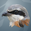
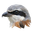
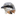
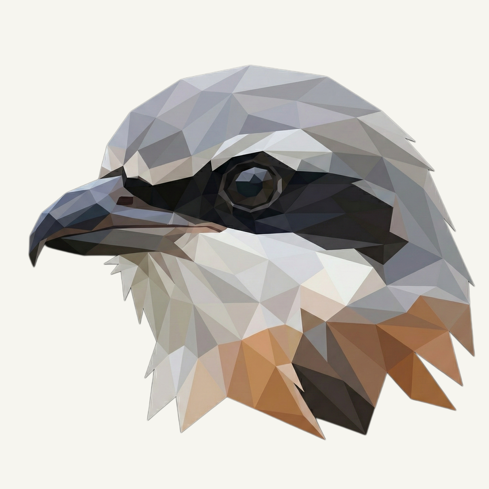
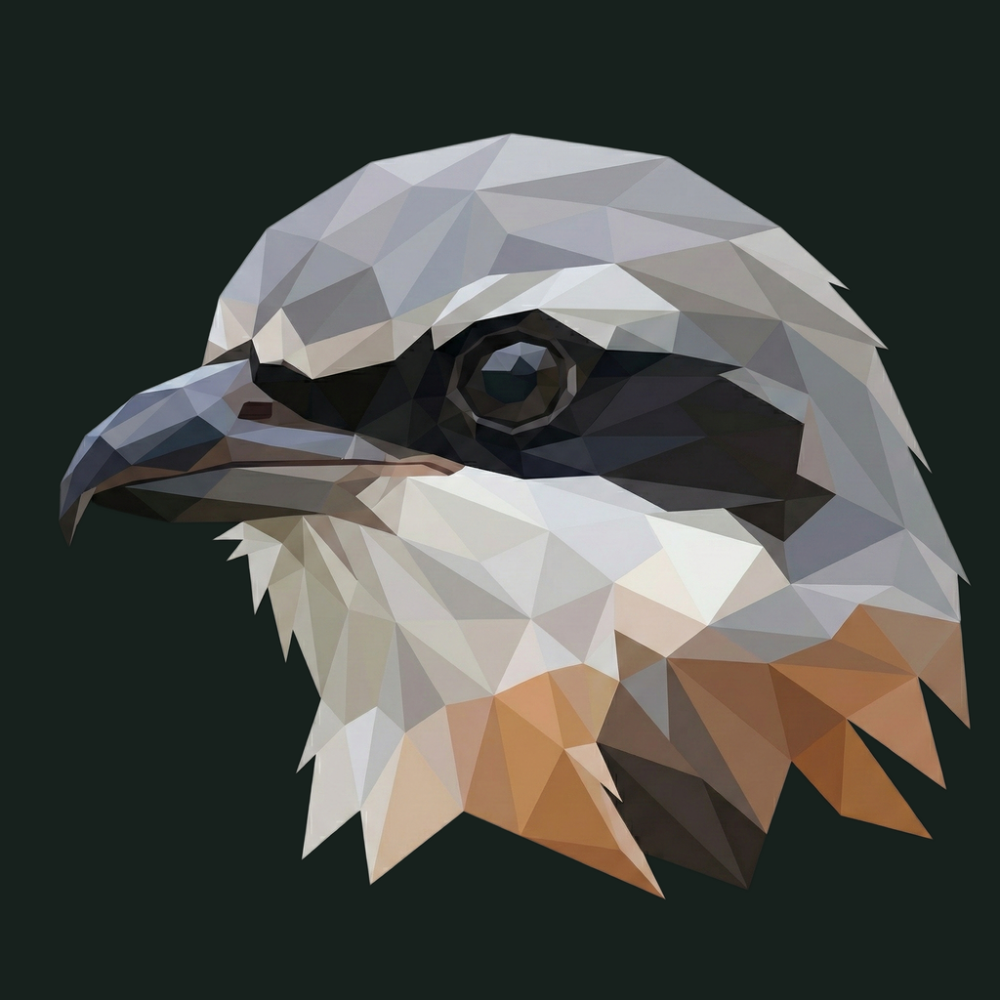

01 / Composition
Keep the watchful profile
The original head, hooked beak, eye mask, shoulders, and canvas are preserved exactly. The existing compact silhouette stays the source of every foreground size.
Animal family · Refined presentation
The familiar shrike, resting on a cool folded-wing relief.
Original artwork retained · finishing 01
Native 2048 × 2048
01 / Composition
The original head, hooked beak, eye mask, shoulders, and canvas are preserved exactly. The existing compact silhouette stays the source of every foreground size.
02 / Drawing
The silver crown, charcoal eye band, blue-grey beak, and warm shoulder facets are untouched. No new ornament or image-generation call is needed for this retained identity.
03 / Presentation
Oversized angular pleats enter a slate field from opposite corners. Narrow edge highlights and a low shadow give the grey bird separation without adding a scene.
Presentation tiles at 128/64 px; transparent artwork for small app and browser marks.



The beak and dark eye band carry the mark at small sizes. Menu bar template icons keep their existing monochrome silhouette; app, toolbar, and browser derivatives retain their distinct roles.
A designed background, with colors sampled from the untouched original.
Select a swatch to copy its hex value. The Shrike UI primary (#86502C) remains a separate product color.
One retained foreground, checked on two contrasting backgrounds.


Original artwork retained · zero generation calls · native 2048 × 2048
Loading brief…
The original animal was retained without a model request. These owner-provided boards guide the independently composed matte field, light, and shallow surface texture.


{kind=link}
{kind=link}
{kind=link}
{kind=link}
{kind=link}